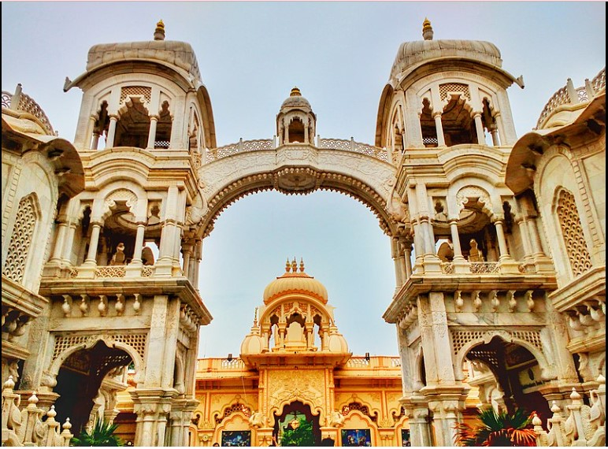

SPECIALITY OF ISKCON MANDIR

its core beliefs are based on hindus scriptures, particularly the Bhagvad Gita and the Bhagavata Purana. ISKCON is the"largest and, arguable,most important brach" of Gaudiya Vaishnava tradition, which has had adherents in india since the early 16th centuary and american and european devotees since the earlyt 1900s.
ISKCON is famous for.
Preching is a majour element of the ISKCON movement. follower of this organization spread consciousness about LORD KRISHNA mainly through the singing of"HARE KRISHNA"songs ang Mantrasin public places and distributing books written by the founder-guru.
"RADHE RADHE"